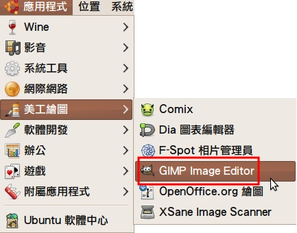
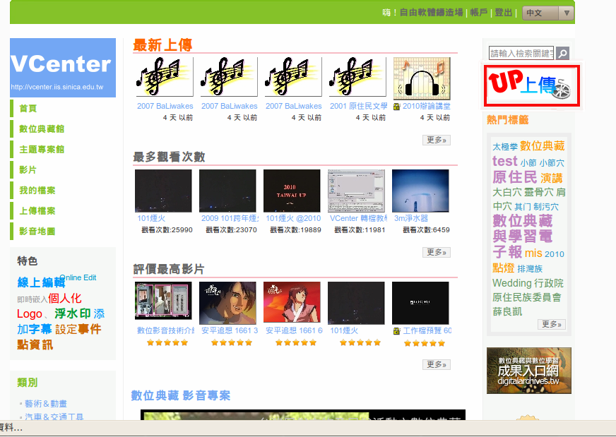

感謝您對「自由軟體鑄造場」的支持與愛護，十多年來「自由軟體鑄造場」受中央研究院支持，並在資訊科學研究所以及資訊科技創新研究中心執行，現已完成階段性的任務。 原網站預計持續維運至 2021年底，網站內容基本上不會再更動。本網站由 Denny Huang 備份封存。
也紀念我們永遠的朋友 李士傑先生（Shih-Chieh Ilya Li）。
也紀念我們永遠的朋友 李士傑先生（Shih-Chieh Ilya Li）。
源碼秘技  如何將 DV 攝影檔，透過完全的 Open Source 元件轉檔並上傳於 YouTube 與 VCenter 平台
如何將 DV 攝影檔，透過完全的 Open Source 元件轉檔並上傳於 YouTube 與 VCenter 平台
如何將 DV 攝影檔，透過完全的 Open Source 元件轉檔並上傳於 YouTube 與 VCenter 平台
建立日期 2010-09-27 22:27 最近更新在 2011-07-13 17:57
相信很多讀者都有來參與過自由軟體鑄造場（以下簡稱 OSSF）的工作坊，也會利用到錄影檔下載與影片瀏覽的功能，但很多人可能對利用自由軟體來剪輯及上傳影片傻傻不清不楚。今天就來教大家如何使用 Open Source來轉檔、剪接、上傳，讓影片編輯對你來說再也不是難事！本篇運行之作業系統為 Ubuntu 10.04，其他作業系統之操作大致相同
使用 GIMP 製作開頭版權宣告圖片
做影片前當然需要一個漂亮的封面來吸引大家的注意力囉！接下來要來利用GIMP 這個自由軟體影像編輯軟體來教大家如何做美美的封面：
GIMP（GNU Image Manipulation Program）
影像處理軟體，號稱 Open Source 界的 Photoshop
官方網站：https://www.gimp.org/
最新版本：2.6.10
平台：Linux, Mac OS X, Microsoft Windows, FreeBSD, Solaris
各平台 GIMP 載點和安裝方式請參考 https://www.gimp.org/downloads/
貼心小提醒： Ubuntu 10.04 沒有預載GIMP，但可透過連上網路，經由『Synaptic 套件管理程式』進行安裝！
首先，先從應用程式中的美工繪圖下的GIMP Image Editor把GIMP叫出來，

接著要把預設的文字改成正確的日期，點選左側的文字工具，再選擇要更改的圖層，將正確的資訊打上，
接著就可以將檔案另存新檔成 .jpg檔
封面在這裡就完成了！接著，有封面當然要有內容描述囉，所以還要再做一張圖片說明，步驟與封面相同，也是一樣將預設的資料改成正確的資訊就對了！
同樣的，也把做好的頁面存成 JPG 檔，如下圖
GIMP其實是很容易上手的繪圖工具，而且在做編排的時候也很簡單明瞭，不會一次開出來一大堆視窗，亂七八糟的要找什麼都找不到。
使用Kdenlive剪接影片
Kdenlive（KDE Non-Linear Video Editor）非線性剪接軟體
官方網站：https://www.kdenlive.org/
最新版本：0.7.7.1
平台：Linux, FreeBSD, Mac OS X
各平台 Kdenlive 載點和安裝方式請參考 https://www.kdenlive.org/user-manual/downloading-and-installing-kdenlive/pre-compiled-packages
接下來，到了處理影片的時候了！在這裡我們是用 Kdenlive 自由軟體影片剪接軟體，先將 Kdenlive打開，
打開之後，將要轉檔剪接的檔案放進來，剛剛辛苦用 GIMP 做的那兩張圖片記得也要一起放進來唷！不然讓他們坐冷板凳他們可是會哭哭的！
將檔案拖進來之後，就可以開始做影片的編排了，剛剛做的頁首當然是放在第一個囉，接著是內容敘述頁，再來就是最重要的影片內容了！把他們依序的拉在一起，中間不可以有空白唷，不然播放的時候會有空白畫面產生，當然，Kdenlive 也非常人性化的。當你將兩個影片靠近的時候，他會自動幫你接合起來，除非你硬將兩個影片重疊，否則一切都會以正常的狀況進行。
而影片跟影片間需要轉場效果作為潤滑劑使其看起來更順暢，轉場效果可以在時間軸上的檔案按右鍵，點選加入轉場效果，選擇你想要的轉場，如果不想這麼麻煩的人，可以直接將滑鼠移到時間軸上的檔案的右下角，此時會出現綠色小三角形，點一下就會有一般轉場的效果了！
＊小提醒：（１）圖片一般預設的長度為五秒鐘。
當一切都編輯好之後就可以輸出了！點選最上排工具列上的Project下的Project Settings，
一般影片的格式是選「768X576 4:3 PAL」，接著點選「OK」。
接著點選「Render」，
將預設選為「PAL」，
再將左邊框框的設定調為「Flash」，選擇「Flash 720×576」。
再將選擇儲存位置並輸入檔名，接著點選「Render to File」，轉檔這階段的步驟就完成了！
若不是針對所有的影片片段轉檔，可選擇以下兩種方式:
1. 時區線
時間軸左上方有一條綠色的時區線，預設長度為4秒鐘，使用者可依需求調整所需的時間長度。
時區線可以延伸/縮短/移動，在這邊選擇延伸以及移動時區。
接著按「Render」，並在下方點選「選擇時區」，接著再點選「Render to file」即可。
2. 導線
若需要精準剪輯片段的時間點，可參考此方法；在時間軸上點選右鍵，選擇「新增導線」
接下來輸入影片開始剪輯的時間點，並加上註解提醒自己此處為起點後，點選OK。
有始當然要有終囉，再新增一次導線，並輸入影片結束剪輯的時間點，及註解此處為結束點後，點選OK。
接著點選「Render」之後選擇「導線區」，選擇範圍後再點選「Render to file」即可。
注意！轉檔所需時間依影片的長度不同而有所差異，在轉檔期間儘量不要開啟其他太耗費電腦資源的軟體/程式，以免轉檔失敗。
所以各位親愛的朋友們應該瞭解了，轉檔前有三個地方可以選擇，你可以選擇全部都轉或是選擇時區，或是加入導線標示起始點製作導線區，講到這邊有沒有覺得Kdenlive真的很貼心呢？
將影片上傳到線上影音分享平台
接著就將轉檔好的影片準備上傳囉！在這邊我們會介紹（1）VCenter - 一個由中央研究院數位典藏技術分項所建置的影音平台，（2）YouTube - 想必已是家喻戶曉的影音分享平台。工作坊大多利用 VCenter 上傳平台來做影音分享，給參加過工作坊但想多練習的朋友們，也可以讓當天有事沒辦法參加的朋友一個學習的機會，有沒有覺得 OSSF 真的很用心呢？
VCenter - 您的影音中心- 數位典藏國家型計畫
https://vcenter.iis.sinica.edu.tw/
那首先，先來把示範 VCenter 的上傳方法給大家看
第一步，當然是要申請帳號跟密碼囉。
這個步驟相信大家應該再熟悉不過，那這個步驟就先跳過了，註冊完之後即可以以自己的帳號登入頁面，在此先以 OSSF 的帳號登入，接著，點選右邊上傳按鈕，

把左邊打紅色必填的框框填寫上正確的資料之後，
＊內容一欄需使用HTML語法輸入，若對HTML語法不熟的朋友可以按內容藍色橫條上的線上編輯器，直接輸入想要傳達的資訊，如下圖，

輸入完成後，點選填寫選擇選項資料，上傳檔案，接著跳到步驟2，填妥相關資料，
接著到了步驟3，選取要上傳的影片，點選確定之後進行上傳。
＊貼心小提醒：VCenter 只能上傳 100MB 容量以內的影片，所以若要上傳到 VCenter，在剪輯影片的時候要留意時間總長度。
上傳完成之後可將影片試放檢查有無錯誤，若一切正常那就大功完成了！
接下來是介紹如何將剪輯好的影片上傳到一般人常用的YouTube。
YouTube
https://www.youtube.com
成立於 2005 年 2 月，2006 年 11 月被 Google 買下，現在為全世界最大影音分享網站。
點選上傳
點選上傳影片
選取要上傳的影片
選擇各欄位填入標題、描述、標籤等相關資訊。
上傳完畢，點選連結即可觀看上傳好的影片
YouTube上的影片頁面
＊貼心小提醒：YouTube 網頁介面最多上傳 2GB 大小的影片，如果不是與 YouTube 合作的媒體，影片長度限制為十五分鐘。所以若要上傳到 YouTube，在剪輯影片的時候要留意時間總長度及檔案大小。
結語：
經過以上的介紹後，想必各位對於使用 Open Source 軟體，如何製作並且上傳影片的步驟，有更深的認識。期待你的影片囉！專欄總覽


自由軟體鑄造場 製作 最佳瀏覽狀態：IE7或Firefox2.0以上 (建議使用Firefox) ‧ 解析度1024*768
E-Mail：contact@openfoundry.org Address：台北市南港區研究院路2段128號 中央研究院資訊科學研究所 . 隱私權條款. 使用條款
E-Mail：contact@openfoundry.org Address：台北市南港區研究院路2段128號 中央研究院資訊科學研究所 . 隱私權條款. 使用條款